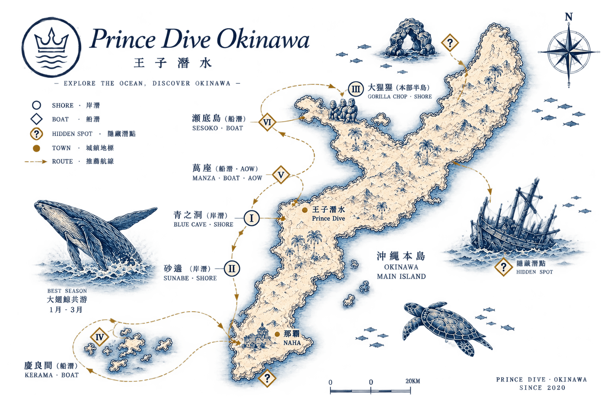

▸ 想 潛 哪 一 片 海 ?
Choose Your Sea
選 · 一 · 片 · 海
告訴我們你的執照等級、旅程日期與想看的東西，我們會為你配對最適合的海域與典禮。
Send Inquiry →沖繩不是一片海，是六片。從北谷砂邊町的岸邊，到那霸西方三十五公里外的慶良間群島——每一片都有自己的地形、自己的光、自己的季節。我們熟悉它們，也知道哪一天該去哪一片。

恩納村真栄田岬的半沒水鐘乳洞，向內延伸約五十公尺。洞口最深處約七公尺，越往裡越淺，最深處只剩兩公尺左右。但真正的主角不是地形，是光——陽光從開闊的洞口射入，被洞內白砂反射，整個空間泛成一片藍。從最深處回頭望向出口，那道藍會滿到看不見邊界。
洞內住著怕光的擬金眼鯛與松毬魚，夏天幼魚成群，穿過時像穿過一場靜止的雨。這是沖繩最有名的一片海，也是最容易被辜負的一片——多數人只是排隊、拍照、離開。
北谷町的宮城海岸，是沖繩本島最被信任的一片岸潛海域。不需要船，也不需要等船班——從岸上走下去就是海。海底鋪滿軟珊瑚，密到當地人叫它「珊瑚花田」；小丑魚常年住在這裡，而往外海游，會遇到一座像 UFO 的取水口構造物，梭魚群在它面前排成一道銀色的牆。
這裡是我們的第一課。每一場長程典禮，我們都先在砂邊認識你的呼吸節奏、你的身體狀態，再決定接下來三天帶你去哪裡。
正式名稱是崎本部，因岸邊一塊形似大猩猩揮掌的巨岩而得名。海底是白砂與淺珊瑚，晴天時亮得像被打了光。但真正讓人屏息的在更外側——一列列橋墩從砂地拔起，在藍色裡排成一條迴廊，陽光穿過柱與柱之間，像走進一座沉沒的神殿。這是六片海裡唯一有「建築感」的一片。
冬天的名物是台灣梭魚群，密集時能把視野整片填滿。位於本部半島南側，北風季節海面依然平穩，全年可潛。
那霸西方約三十五公里的群島，二〇一四年劃為國立公園。透明度全年維持在二十到三十公尺，狀況好的日子可以達到五十——那個藍有自己的名字，叫 Kerama Blue。
這裡有約兩百五十種珊瑚，海龜遭遇率高，牠們會停在礁石上休息，對人並不特別在意。冬天下潛時，水裡偶爾會傳來座頭鯨的歌聲——低頻、綿長，你聽得見，但看不見牠。那是這片海每年只給幾個月的東西。
恩納村萬座毛外海的地形海域。最具代表性的是萬座夢幻洞——水深五公尺的入口垂直墜下，在十八到二十公尺處橫向穿出，是一個 L 型的豎穴。洞底暗到眼睛不會適應，唯一的方向感來自手電筒。出口被擬金眼鯛群封住，你得穿過那道活的魚簾，才會重新回到藍色裡。
附近另有一座馬蹄形巨岩的斷崖，落差約四十公尺，沿壁移動時常遇上倒牙鮪、烏鰺與金梭魚群。這是六片海裡最深、也最要求技術的一片——中性浮力不是加分項，是門檻。
本部半島西側的小島，周長約八公里。西岸的「拉比林斯」是一座水下迷宮——洞窟、隧道與拱門層層相連，多數段落不需要手電筒就能穿越。隧道裡住著松毬魚與龍蝦，開闊處偶爾能撞見休息中的白鰭鯊。
當陽光以對的角度射入，光柱會從岩縫落下，在砂地上打出一塊亮斑，像舞台的聚光燈。洞窟本身只有五到十公尺深，但斷崖下方一路落到五十公尺。受風向影響，這裡主要是冬季的海。
船潛的潛點，不由我們決定。
由當日的風向、浪高與潮汐決定，最終由船長判斷。
這意味著我們無法在你出發前，承諾一個確切的座標。
但這也意味著——
你不會被帶去一片「行程表上排定、但今天狀況不好」的海。
我們承諾的不是某一個點，
而是那一天，最值得下潛的那片海。
海的樣子不由我們決定，
但把你帶進哪一片海、確保你安全地回來，是我們的責任。
| 潛點 | 形式 | 水深 | 資格門檻 |
|---|---|---|---|
| 青之洞 | 岸潛 | 2–12m | 所有人 |
| 砂邊 | 岸潛 | 5–20m | 所有人 |
| 大猩猩 | 岸潛 | –18m | 所有人 |
| 慶良間 | 船潛 | 依潛點 | OW 以上 |
| 萬座 | 船潛 | 18–40m | AOW 以上 |
| 瀨底島 | 船潛 | 5–18m | OW 以上 |
我們固定使用六片海域：恩納村青之洞窟（真栄田岬）、北谷町砂邊、本部町大猩猩（崎本部）三處岸潛點，以及慶良間群島、萬座毛外海、瀨底島三處船潛海域。岸潛點全年可安排，船潛則依季節與海況調整。
可以。三個岸潛點——青之洞、砂邊、大猩猩——都開放給體驗潛水的客人，由專屬教練全程陪同，不需要任何執照或經驗。三個船潛海域則需要執照：慶良間與瀨底島需要 OW，萬座因深度與地形需要 AOW 以上。
無法事先指定。船潛的實際下潛點由當日風向、浪高與潮汐決定，最終由船長判斷。我們會在出發當天告知你今天下的是哪一片海，並在下水前完整說明地形與路線。
可以，而且冬天有些海域反而更好。瀨底島受風向影響，主要就是冬季的潛點；大猩猩位於本部半島南側，北風季節海面依然平穩，全年可潛；慶良間在冬季有機會在水下聽見座頭鯨的歌聲。我們會依季節配置防寒裝備。
取決於你選擇的典禮。單日的擇海之典為單一海域兩潛；四天三夜的群島之謁則橫跨砂邊與三片船潛海域，共十一潛。我們刻意不把一天塞滿——在同一片海停留得夠久，才看得見早晨的光和午後的光有什麼不同。
可以。潛水靠裝備控制浮力，不靠泳技。下水前教練會先在腳踩得到底的淺水區，帶你適應呼吸與面鏡，確認你放鬆之後才往深處走，全程貼身陪同。如果下潛仍讓你不安，也可以改成浮潛——同樣看得到珊瑚與魚群，只是換一個高度。
我們全年營業，沒有淡季。夏季水溫高、能見度好，適合第一次下水的人；冬季轉北風之後，瀨底島反而進入最佳季節，慶良間也有機會在水下聽見座頭鯨的歌聲。冬天我們配置 5mm 防寒衣，保暖足夠，不必因為季節放棄下水。
體驗潛水的年齡下限是 10 歲；8 至 9 歲的孩子可以參加 PADI Bubblemaker 的淺水體驗。年齡更小的孩子目前無法參加水肺潛水，建議以浮潛的方式一同下水，全程穿著浮力裝備並由教練陪同。
告訴我們你的執照等級、旅程日期與想看的東西，我們會為你配對最適合的海域與典禮。
Send Inquiry →